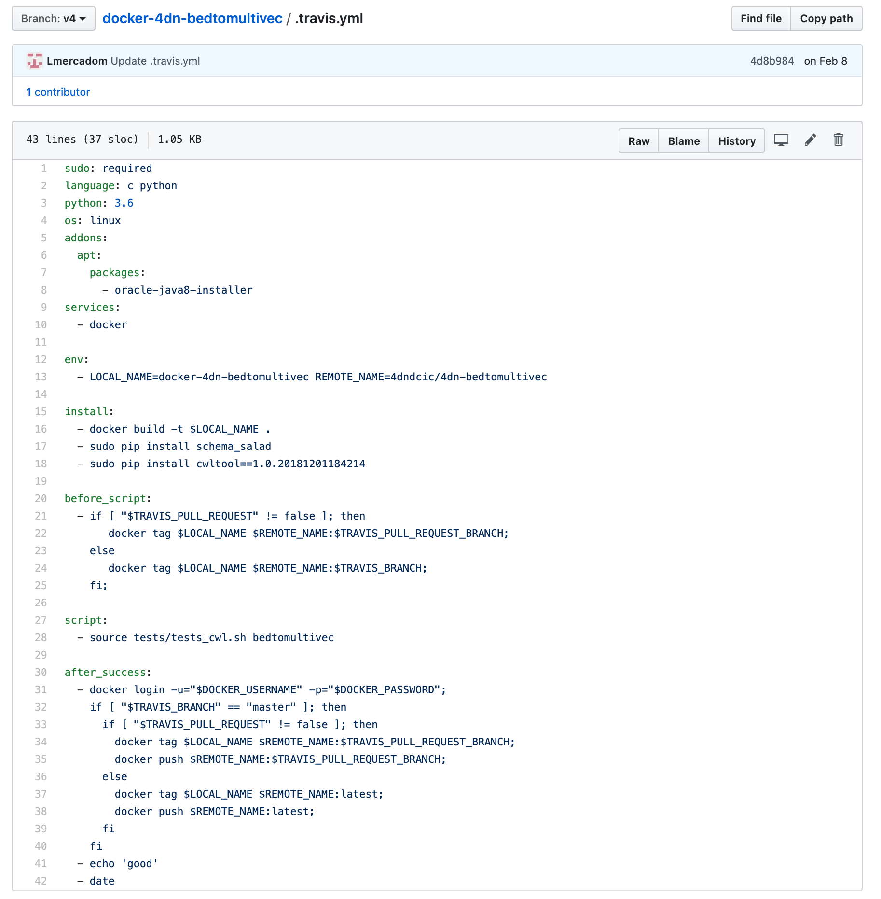

Travis Test¶
We use travis to test that the cwl workflow works as we want to. In order to run a travis test, we need a travis.yml file and test files.
The .travis.yml file¶
This travis.yml file tells travis what to do.
Example:
Note
This .travis.yml file is very similar for all the pipelines. You can follow the template and modify the docker image name. The version of the docker image does not need to be included. The .travis.yml file temple can be found here
Tests files¶
Create a folder called tests. Inside the folder add the following folders and
files:
a
test_filesfolder: This is where the input files reside.a
test_input_jsonfolder: This should contain ainput.jsonfile specifying the input files and parameters for the test.
Example:

Configuring Travis in Github¶
Go to https://travis-ci.com/ and sign up with Github.
Once you are signed in, go to your repository, click in more options on the
top right, go to settings, go to the section Environment Variables. Add
you DockerHub username and password.
Now you can go back to the main travis CI page and click on Restart build
Warning
Make sure the travis test passes before proceeding to the next steps.